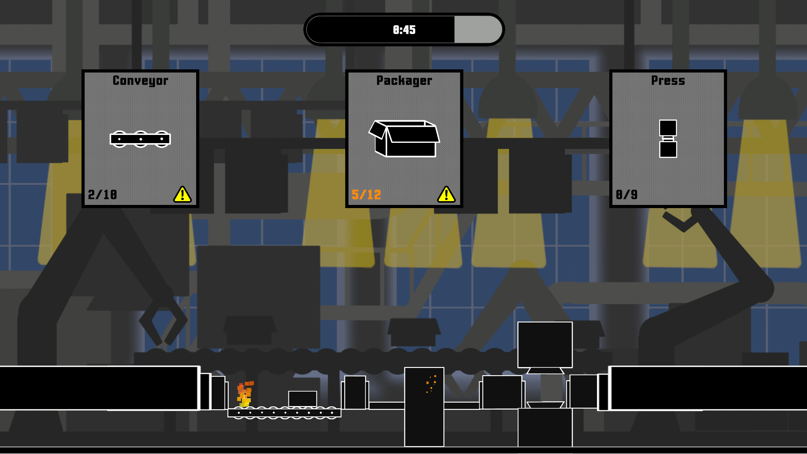
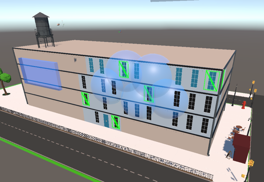
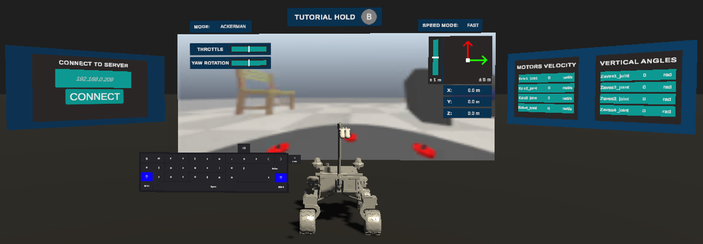

Software engineer · game developer · robotics
Software for
real problems.
Software engineer focused on C#, Unity, software architecture and interactive systems.
Skillset
- C# / Unity
- Software architecture
- C++ / Python
- VR / XR
- Robotics systems
- Tools and simulation
Open to software and game development roles.
01 / Selected work
Things I have built.
Games, research and robotics projects.

Factory Collapse 2025
A rhythm-based factory game developed in one week for a game jam. The project focused on delivering a complete, cohesive game experience — from its setting and narrative to gameplay, progression and visual feedback.
- Full software
- Complete gameplay implementation
- Level and progression systems
- Save/load system
- Dialogue and monologue system
- Damage and particle feedback

Axiom Prime 2026
An online idle-style game currently in development, built around a custom backend architecture and a Unity client. The project explores persistent online systems, server-side game logic and communication between the client and backend.
- Backend architecture
- Server-side game systems
- Unity client architecture
- Client-server communication
- Frontend UI systems
- Online game systems

VR Swarm Teleoperation 2026
A VR interface for operating a swarm of autonomous drones. The project combines robotics, virtual reality and human-in-the-loop interaction into a scenario where an operator must explore a building and coordinate drones to investigate its interior.
- VR interaction and interface design
- Swarm-control workflow
- Operator interaction model
- Environment and minimap systems
- Robot communication integration
UAV Targeting Competition — Vietnam 2024
A UAV developed for a competition focused on accurately hitting ground targets with tennis balls. The project covered the drone design, onboard software and the complete communication architecture connecting the different system components.
- UAV system design
- Communication architecture
- Onboard software
- Control and command systems
- Hardware-software integration

VR Robot Teleoperation 2024
Master’s thesis focused on designing a communication and teleoperation system for a mobile robot, with Unity used as a VR interface for real-time visualization and control.
- Teleoperation system architecture
- Robot communication layer
- Unity VR application
- Real-time robot visualization
- VR control and input mapping

Autonomous Mobile Robot 2023
Bachelor’s thesis focused on autonomous mobile robot navigation, combining line following with obstacle avoidance. The project included the design and implementation of the complete software architecture required to operate the robot.
- Software architecture design
- Line-following system
- Obstacle avoidance
- Robot control logic
- System implementation and testing

Robotic Arm Manipulator 2021
A custom robotic arm designed and developed as a complete hardware-software system. The project covered the mechanical concept, control application and communication between the controller and the robot.
- Robot design and prototyping
- Control application
- Servo control system
- Bluetooth communication
- Hardware-software integration
02 / CV
Want the short version?
03 / What I bring
C#, Unity, architecture and systems thinking.